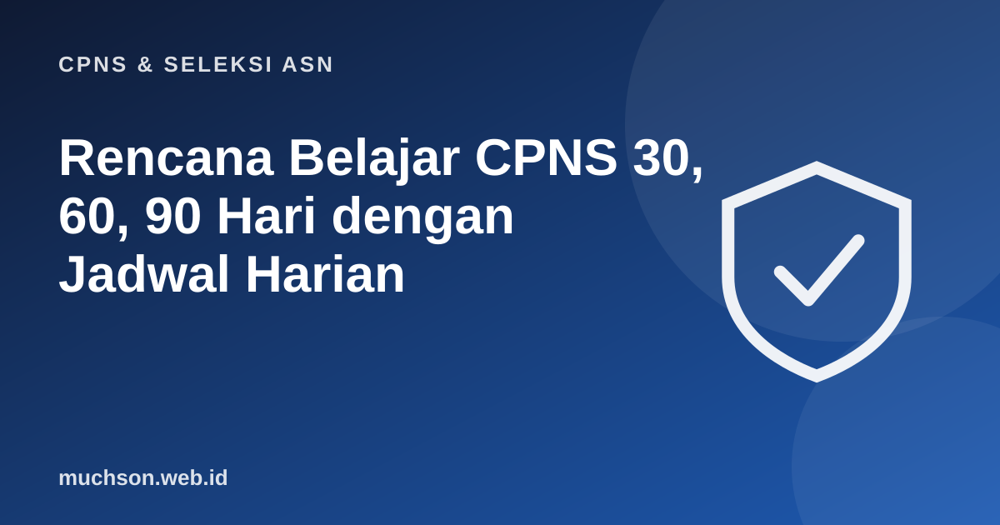

Beranda › Artikel › CPNS & Seleksi ASN
CPNS & Seleksi ASNRencana Belajar CPNS 30, 60, 90 Hari dengan Jadwal Harian
Waktu belajar terbatas, sedangkan SKD punya tiga subtes dengan bobot poin berbeda. Rencana yang baik membagi waktu menurut poin dan kelemahan Anda, memakai metode yang terbukti paling efektif oleh penelitian belajar, dan diukur dengan tryout. Berikut tiga rencana, 30, 60, dan 90 hari, yang bisa disesuaikan.

Mulai dari peta poin SKD
SKD berisi 110 soal dalam 100 menit dengan nilai maksimal 550. Pembagian poinnya menentukan bagaimana waktu belajar sebaiknya dialokasikan, karena TKP menyumbang paling banyak poin dan memiliki ambang batas tertinggi secara proporsi.
Deskripsi teks diagram
- TWK: 30 soal: 150 poin
- TIU: 35 soal: 175 poin
- TKP: 45 soal: 225 poin
| Subtes | Ambang batas (rujukan CPNS umum) | Persen dari maksimal | Sifat belajar |
|---|---|---|---|
| TWK | 65 dari 150 | sekitar 43% | Hafalan dan pemahaman: Pancasila, UUD 1945, sejarah, bela negara |
| TIU | 80 dari 175 | sekitar 46% | Keterampilan: verbal, numerik, figural; perlu latihan berulang |
| TKP | 166 dari 225 | sekitar 74% | Pola pilihan terbaik; perlu memahami skala 1 sampai 5 |
Prinsip yang terbukti: uji diri dan beri jeda
Tinjauan besar Dunlosky dan rekan (2013) terhadap sepuluh teknik belajar menilai dua teknik berguna tinggi: uji diri dengan soal (practice testing) dan belajar terdistribusi (jeda antarsesi). Membaca ulang dan menandai teks dinilai berguna rendah. Roediger dan Karpicke (2006) menunjukkan bahwa menguji ingatan meningkatkan retensi jangka panjang dibanding sekadar belajar ulang, dan Cepeda dkk. (2006) merangkum bahwa jeda antarsesi membantu daya ingat.
Deskripsi teks diagram
Berguna tinggi
- Uji diri dengan soal latihan
- Belajar terdistribusi: sesi singkat dengan jeda
- Beri umpan balik dan perbaiki kesalahan
Berguna rendah
- Membaca ulang berkali-kali
- Menandai atau menyorot teks
- Meringkas tanpa menguji diri
Aturan praktis: sekitar 60% waktu untuk mengerjakan soal dan membahas kesalahan, 30% untuk memahami konsep dari bab yang lemah, 10% untuk tryout penuh. Sesuaikan dengan kondisi Anda.
Rencana 30 hari: untuk yang sudah punya dasar
| Minggu | Fokus | Kegiatan inti |
|---|---|---|
| 1 | Diagnosis dan TKP | Tryout awal bertimer; pelajari pola skala 1 sampai 5; 20 soal TKP per hari |
| 2 | TIU numerik dan verbal | Deret, perbandingan, silogisme, analogi; latihan terpilih dan bahas semua kesalahan |
| 3 | TWK dan figural | Pancasila, UUD 1945, sejarah, bela negara; figural serial dan analogi |
| 4 | Tryout dan perbaikan | 3 tryout penuh; bahas kesalahan; ulang bab terlemah |
Rencana 60 hari: membangun konsep lalu mengasah
| Minggu | Fokus | Kegiatan inti |
|---|---|---|
| 1 sampai 2 | Konsep TWK dan TIU | Pelajari konsep per bab; kerjakan 15 sampai 20 soal per bab dengan pembahasan |
| 3 sampai 4 | TKP dan figural | Pola TKP; figural serial, analogi, ketidaksamaan |
| 5 sampai 6 | Campuran dan ritme | Latihan campuran bertimer; mulai tryout penuh tiap minggu |
| 7 sampai 8 | Evaluasi | Tryout 2 kali seminggu; ulang bab yang selalu salah; istirahat cukup di hari terakhir |
Rencana 90 hari: untuk pemula penuh
| Bulan | Fokus | Target |
|---|---|---|
| 1 | Fondasi | Semua bab dipelajari sekali; tryout awal untuk peta kemampuan; kebiasaan belajar harian terbentuk |
| 2 | Pendalaman bab lemah | Soal per bab sampai tercapai target akurasi; tryout tiap minggu |
| 3 | Simulasi dan penghalusan | Tryout 2 sampai 3 kali seminggu; manajemen waktu 100 menit; ulang kesalahan |
Kerangka satu hari belajar
Deskripsi teks diagram
- Menit 0 sampai 10: Latihan harian. Beberapa soal campuran untuk pemanasan
- Menit 10 sampai 50: Fokus bab. Pelajari konsep singkat lalu kerjakan soal bab terlemah
- Menit 50 sampai 80: Bahas kesalahan. Catat alasan salah dan pola jebakan
- Menit 80 sampai 90: Ulang cepat. Uji ulang soal yang salah kemarin
Untuk rutinitas harian, latihan harian 10 soal di LolosSeleksi menyesuaikan sebagian soal dengan bab terlemah Anda, dan tryout SKD pertama gratis cocok sebagai titik awal.
Tanya jawab
Berapa lama waktu ideal belajar SKD?
Subtes mana yang harus dipelajari dulu?
Apakah lebih baik belajar lama sekali atau sering dan singkat?
Berapa kali sebaiknya tryout?
Apakah membaca ulang catatan tidak berguna?
Referensi
- Dunlosky dkk. (2013), Improving Students' Learning With Effective Learning Techniques, Psychological Science in the Public Interest 14(1) (membuka tab baru)
- Roediger dan Karpicke (2006), Test-Enhanced Learning, Psychological Science 17(3) (membuka tab baru)
- Cepeda dkk. (2006), Distributed Practice in Verbal Recall Tasks, Psychological Bulletin 132(3) (membuka tab baru)
- Keputusan Menteri PANRB Nomor 406 Tahun 2026 tentang Nilai Ambang Batas SKD Sekolah Kedinasan (JDIH KemenPANRB, 27 Juli 2026) (membuka tab baru)
- Rangkuman nilai ambang batas SKD CPNS 2024 (KepmenPANRB 321/2024), Okezone (membuka tab baru)